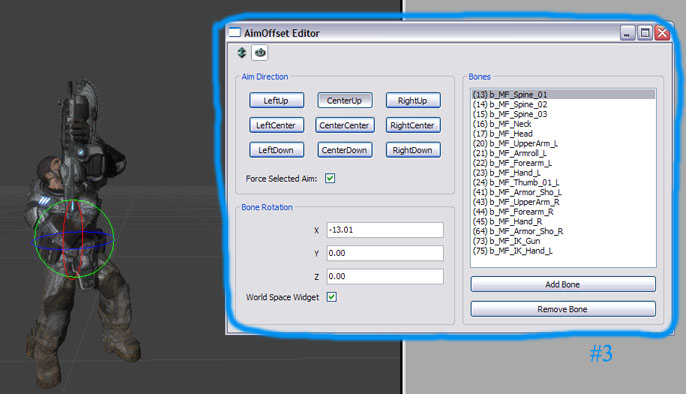
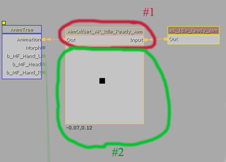
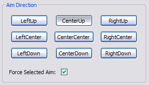
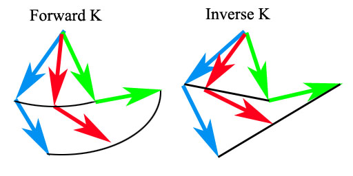

UDN
Search public documentation:
AnimationNodesJP
English Translation
中国翻译
한국어
Interested in the Unreal Engine?
Visit the Unreal Technology site.
Looking for jobs and company info?
Check out the Epic games site.
Questions about support via UDN?
Contact the UDN Staff
中国翻译
한국어
Interested in the Unreal Engine?
Visit the Unreal Technology site.
Looking for jobs and company info?
Check out the Epic games site.
Questions about support via UDN?
Contact the UDN Staff
アニメーション ノード
ドキュメントの概要: Unreal Engine 3 のアニメーション ノードの基礎について。 ドキュメントの変更ログ: Laurent Delayen により作成、更新および維持。概要
ここでは Unreal Engine 3 にあるアニメーション ノードの基礎、および AnimTree でのそれらの扱い方について紹介します。始める前に、このシステムの手引きとして最適な アニメーション システムの概要 をご覧ください。基本的な BlendNode タイプ
AnimNodeBlend
これは、2 つの子を合成する単純なブレンドです。SetBlendTarget 関数を使って、2 番目の子のウェイトや、到達するまでに要する時間 (秒単位) を指定できます。AnimNodeBlendList
このノードは子のアニメーションの数を受け取ります。SetActiveChild 関数を使って、完全な長さ (1.0 のウェイト) を与える子アニメーションと、到達するまでに要する時間を指定できます。AnimNodeBlendPerBone
これは AnimNodeBlend と同じですが、2 つの子アニメーションのブレンド方法をボーン単位で制御することができます。このノードは、基本的にボーン単位のマスクまたはフィルタとして機能します。例えば、Child 1 は足、Child 2 は上半身を担当するとし、BranchStartBoneName 配列には Child 1 からマスクアウトし、Child 2 から受け取るボーンの親を格納します。この場合、配列に Spine1 のボーン名を格納すれば、上半身全体に対応できます。AnimNodeAdditiveBlending
このノードは Additive アニメーションから来る Additive データ、または Additive アニメーションのブレンドを結合し、Source インプットに追加します。非常に単純なノードで、Target Weight とは必要な Additive アニメーションの量を意味します。| bPassThroughWhenNotRendered | Additive アニメーションが重要でない場合は、最適化としてメッシュをレンダリングしないときにこれをスキップできます。 |
AnimNodeBlendDirectional
このブレンドノードは、前方、後方、左掃射 (strafe)、右掃射アニメーションをそれぞれ表す 4 つの子ノードを受け取ります。このアニメーション ツリーが属するアクタを見て、現在の速度と向きに基づいて子ノードをブレンドします。AnimNodeBlendByProperty
このブレンドは、デフォルトでは 2 つの子を受け取りますが、必要な場合はこれを増やすことができます。そのアクタオーナーのプロパティで Bool、Float、Int、Byte の名前を探します。Bool と Float は 2 つの子に制約されています (FLOAT は指定範囲内の AnimNodeBlend として機能します)。Int と Byte は対応するインデックスをトリガします。このノードはプロトタイプ化を迅速に行うのに非常に便利です。Synchronization (AnimNodeSynch)
注意: (2007 年 2 月 21 日) AnimNodeSynch ノードは使用禁止になり、AnimTree ノード内の AnimGroup システムに代わっています (ブレンドツリーのルートノード)。詳細は AnimationOverview#AnimGroups を参照してください。AnimNodeSynch はまだ機能していますが、サポートを終了しますので新しいシステムへの移行が推奨されています。照準ノード
Unreal Engine 3 では一組のノードでキャラクターの照準問題を処理しています。この技術は、アーティストが頭の様相を操作するなど、他の状況にも利用できます。概要
ゲーム中には、キャラクターが照準を合わせている方向に手に持った武器を向けたい場合がよくあります。このテクニックは、ヘッドの様子や同じ場所での回転をアーティストが制御する場合など、他の状況にも応用できます。 赤の矢印は、赤の衝突ボックスで表示されているアクタの回転を示しています。緑の矢印は、プレーヤの照準を表しています。[Aiming Direction] (照準方向)をアクタの基本回転に関連づけた回転として定義できます。オフセットも「AimOffset」として参照されます。
赤の矢印は、赤の衝突ボックスで表示されているアクタの回転を示しています。緑の矢印は、プレーヤの照準を表しています。[Aiming Direction] (照準方向)をアクタの基本回転に関連づけた回転として定義できます。オフセットも「AimOffset」として参照されます。
AnimNodeAimOffset
このノードは入力によりニュートラルな動きをします。ニュートラルな、というのはアニメーションに照準オフセットが設定されていない、つまり「銃は前方を向いている」という意味です。このノードは回転と変換のオフセットを組み合わせて追加することにより、複数のボーンを選択することができます。これらのオフセットは9つのポーズ（中央、上、下、右中央、右上、右下、左中央、左上、そして左下）に定義され、双線式補間によりブレンドされます。これにより、アーティストはメッシュを照準の合わせたい方向ならどこにでも、ポーズや頭の方向を向けることができます。この変換は Actor Space (アクタ空間) で行われるので、ローカルのボーン回転は照準の結果に影響を及ぼしません。したがって、キャラクターの腕を動かしながら走らせても正しく照準を定めることができます。概要
下のイメージは、このノードの要約です。

上のイメージはこのノードの非常にシンプルな設定画面です。#1 の部分ではノード自体を表しています。この部分でダブルクリックすると、9 つのポーズを作り出すための AnimOffset Editor （#3 の部分）が表示されます。#2 の部分には、ブレンド結果をリアルタイム ビューポートで確認できるドラッグ式 2D スライダーが備えられています。
9 通りのポーズが長方形の枠で表示されています。上のイメージには 9 つのポーズが表示されています。ノードは法線化相対照準オフセットを使ってどのポーズを使うかを判断します。範囲は X、Y 座標値で（-1、-1）から（+1、+1）までです。つまり（0、0）の Aim はちょうど [正面中央]、（+1、0）で [右中央]、そして（+0.5、0）なら [正面中央] と [右中央] の中間ということになります。AimOffset Editor を使用する
エディタを使用時、まず最初に行うことは、新しいプロファイルを作成することです。 Profile セクションで [New](新規)をクリックし、プロファイル名を入力します。ノードごとに複数のプロファイルを追加することができ、また、消去することもできます。ツールバー上で、「Open」(開く) と「Save」(保存) アイコンに注目してください。これにより、プロファイルをインポートしたり保存することができます。 プロファイルが作成されると、次にどのボーンを反映させるかを選択します。必要なボーンをすべて選択したら、それぞれについて 9 通りのポーズによるオフセットを編集できます。ボーンは [ボーン] のコンボボックスで名前をクリックして選択します。ひとつのポーズ（もしくは [Aim Direction](照準方向)）は、[照準方向] のグループで該当するボタンをクリックして選択します。 上図の [照準方向] グループは [Bone Translation] (ボーンの変換) や [Bone Rotation] (ボーンの回転)といった編集機能を選択するツールバーです。インタラクティブな編集のために、リアルタイム ビューポートにトグルにより適したウィジェットの機能が表示されます。[World Space Widget] (ワールド スペース ウィジェット) のチェックボックスでは、ウィジェット編集をローカルかワールドスペースかトグルして選ぶようになっています。編集のフィールドでは直接数値を入力することもできます。アニメーションからオフセットをベイクする
手動でオフセットを入力したり、ウィジェット 装置を使用する代わりに、アニメーションからオフセットを抽出することができます。これを行うには、ノードのプロパティに行き、 expand the Profiles セクションを展開し、編集したいプロファイルインデックスを選択すると、 AnimName_XX と名づけられた変数名が見つかります。XX は、9 つの方向に相当します。そこで使用したり、プロパティ「bBakeFromAnimations」をトグルするため、アニメーション名を設定します。アニメーションを 9 つすべてのポーズに割り当てる必要はありませんが、 オフセットの抽出に使用される参照ポーズとして、AnimName_CC (CenterCenter- 正面中央) が最低限必要です。 When "bBackFromAnimations" がクリックされると、ノードは、ポーズ XX と参照ポーズ CC 間での違いに基づきオフセットを抽出します。AnimNodeAimOffset のパラメータ
| 照準 | 法線化照準オフセット |
| 水平範囲 | 水平境界のスケール |
| 垂直範囲 | 垂直境界のスケール |
| bForceAimDir | 設定が True なら、ForcedAimDir （デフォルト設定は AimOffset Editor にあり）を使用し、そうでなければ Aim の値が有効となる |
| ForcedAimDir | 強制ポーズ |
ゲームでノードを使う
このノードを使うには、プログラマーのサポートが必要です。各ノードをコードで参照したり、[ポーン] からの法線化 [照準] パラメータの直接修正やノードのカスタマイズ サブクラスの作成といった作業が必要なためです。ノードの追加のたびにコードの微調整が必要なため、初めの方法が非常に順応性が高いといえます。また、コードから参照したノードはガーベジコレクションされないため除去しておきます。特別仕様版のゲームを作る際にもっとも実用的なソリューションは、ノードの拡張です。法線化照準値をカスタマイズ ポーンクラスから直接読み出すため、GetAim() 関数を呼出せば、上記の問題がすべて解決します。 また、ノードは最後に編集されたプロファイルで保存されます。スクリプトまたは、C++ ::SetActiveProfileByName()、 :: SetActiveProfileByIndex().から次の関数を呼び出すことで、ゲームプレイ中にプロファイルを切り替えることが可能です。武器の配置調整 （FK と IK）
AnimTree では Forward Kinematics (FK) (順運動学) を使ってアニメーションをブレンドしますが、これによってボーン位置の重要な場所での補間に問題が生じます。武器の照準を合わせる場合が、このケースに当てはまります。下のイメージでは、この問題を把握するために Forward Kinematics と Inverse Kinematics (IK) (逆運動学) の両補間方法を表示しています。
２ つのアニメーションのブレンドに FK を利用した場合、ボーンの回転は補間されます。武器の照準合わせの場合、これでは左右の手の位置にずれが生じます。この問題を回避するにはいくつかの方法があります。ひとつは左手を右手からの固定オフセットの位置に貼り付けてる方法ですが、これでは右手の位置ずれの補正まではできません。もっとも望ましいのは手の終了位置を補間することで、腕の位置をそこから定義します。すると、両手の位置関係は正しく保たれます。したがって、正しい動きをさせるには Inverse Kinematics を使います。 パフォーマンスを保つため、IK オプションでは照準ノードのビルドは用意されません。各 Aim ノードごとに評価するのはあまりにも付加が高すぎるためです。しかし、この問題はボーンのヒエラルキーを使って解消することができます。IK ボーンを（ルートボーンのすぐ下に）作成でき、移動は変換のみで可能、フレーム対フレームで手の位置を密接に合わせます。複数のアニメーションがブレンドされた手はデフォルト設定で FK ブレンドを利用し（回転を利用するため）、IK ボーンは IK を使います（変換を利用するため）。SkelControlLimb （単純な 2 ボーンの IK ソルバーによるボーンコントローラ）の利用や必要な場合はトリガによって、意向に応じて FK と IK のいずれかをスイッチ選択できます。Aim のノードは各ノードで３回処理が行われる一方、ボーンのコントローラは効果の前処理のように使われ、一度だけ実行されます。AnimNodeBlendByAim
2006 年 11 月 7 日(変更リスト149232 )現在で、 このモードは廃止されています。 代わりに、 UAnimNodeSequenceBlendByAim を使用してください。まったく同じ機能を持ちますが、5 つのノードを必要とする代わりに、 1 つのみを使用します。AnimNodeSequenceBlendByAim
(最低、変更リスト #149232 が必要) ２ つめのノードは同じ観点から AnimNodeAimOffset として使いますが、ひとつのアニメーションにつき 9 通りのポーズが選択できるのに対し、このノードでは 9 通りのアニメーションとそのブレンドが可能です。その他は基本的に同じです。| Aim (照準) | 法線化照準オフセット |
| HorizontalRange (水平範囲) | 水平境界のスケール |
| VerticalRange (垂直範囲) | 垂直境界のスケール |
| AnimName_** | ポーズ名**に利用するアニメーション |